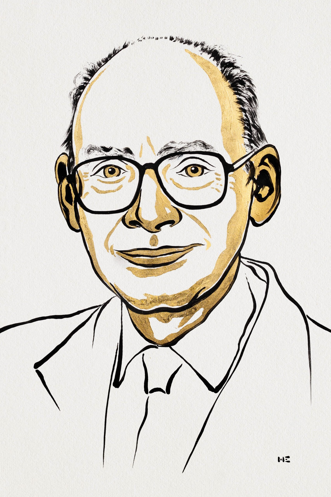
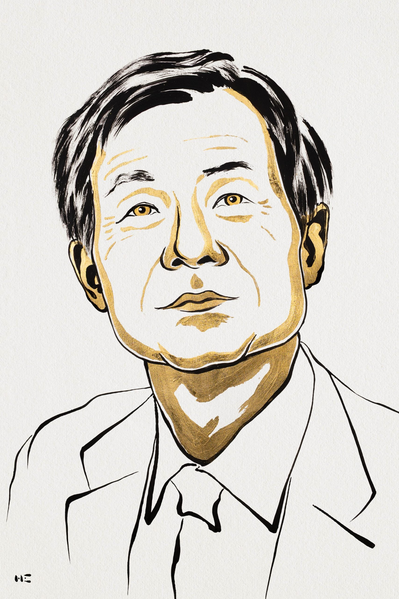
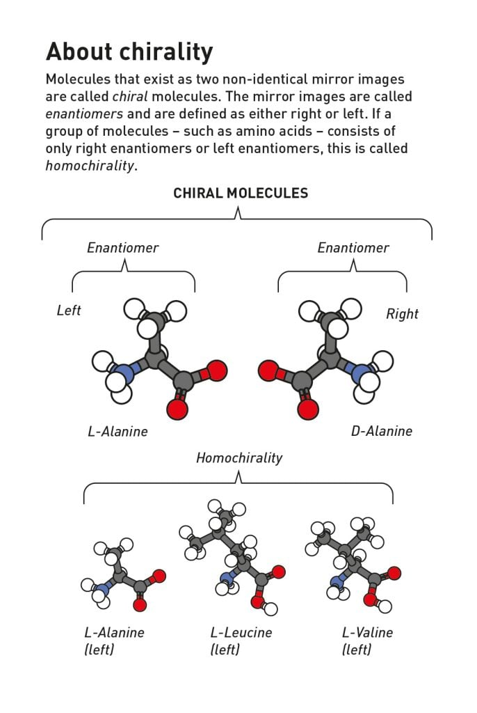
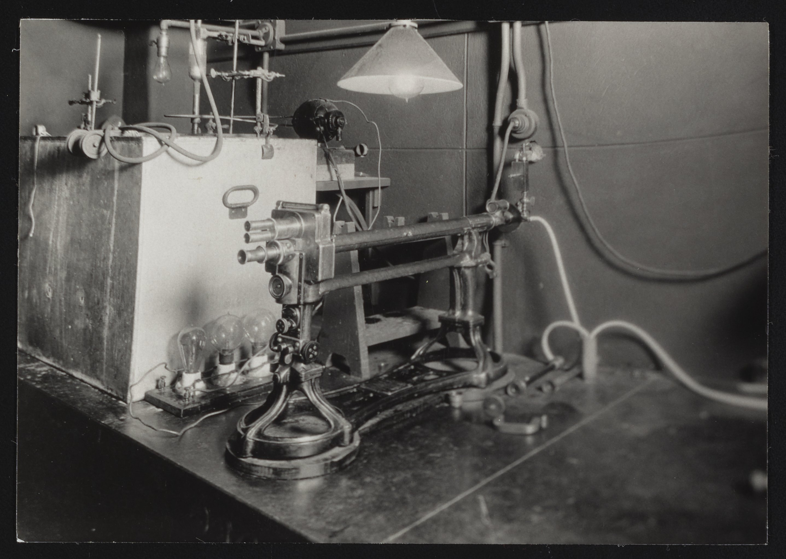
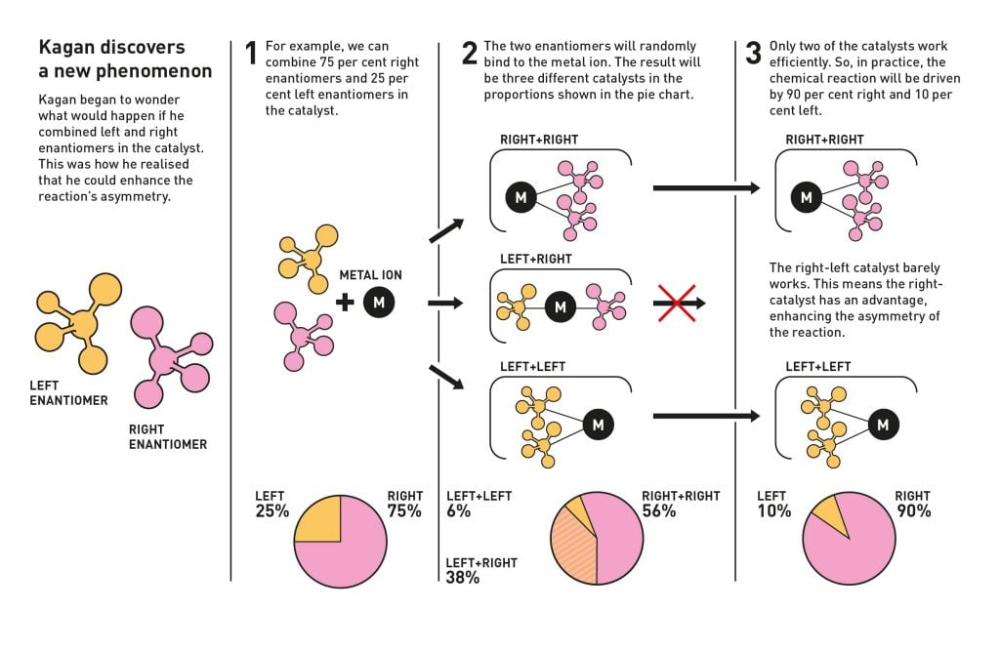
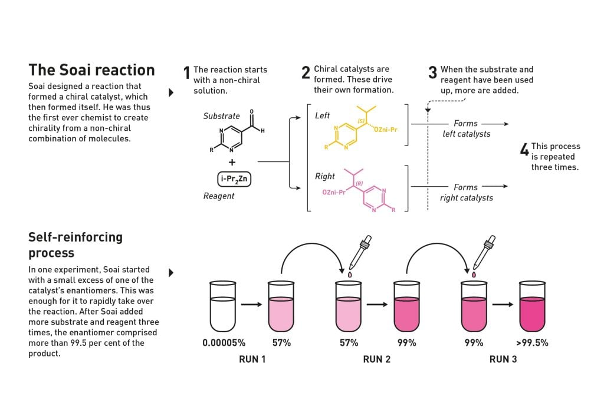

沒有手性偏向
若生成兩型的途徑同樣容易，在沒有其他手性影響的情況下，產物可能各占一半。
你的左右手互為鏡像，卻不能完全重疊。有些分子也是如此。當兩種「手性」幾乎平手，化學反應能不能把微小差異放大？Henri B. Kagan 與 Kenso Soai 的發現，把這個問題變成可以在實驗室檢驗的化學。


官方肖像插畫：Niklas Elmehed © Nobel Prize Outreach · 教育與科普使用
「發現不對稱有機合成中的非線性效應與自催化。」
“for the discovery of non-linear effects and autocatalysis in asymmetric organic synthesis”
本屆兩位得主各占 1/2，平分 1,200 萬瑞典克朗獎金。官方公告 ↗Kagan 發現：催化劑的左右比例，未必等比例傳到產物；特定反應能放大其中一型的優勢。Soai 則實現產物促進自身生成的反應，讓很小的手性偏向經過反覆反應，變成極大的偏向。
重要之處：幫助化學家理解與控制所需分子的合成，也為「生命為何偏用一種手性」提供可驗證的放大機制。
本頁為化學獎解析；其他已完成的獎項可從上方連結閱讀。
手性分子與它的鏡像不能靠旋轉完全重疊，這兩種形式叫做「對映異構物」。可以把它們想成左手套與右手套：材料相同，但形狀不同，能套上的手也不同。

先看上半部：兩個丙胺酸模型互為鏡像，原子連接相同，但不能只靠旋轉完全重疊。再看下半部：丙胺酸、白胺酸、纈胺酸雖然是不同分子，卻都以 L 型呈現，說明生命常偏用同一類手性。
圖中的 Left／Right 是左右手的比喻；L／D 是構型標記，不能直接解讀為光往左／右旋轉。球的配色：灰色碳、白色氫、藍色氮、紅色氧。
生物體裡的蛋白質、酵素等也具有手性，可能以不同方式辨認一對鏡像分子。因此，藥物、香味或農用化學品的兩型，可能產生不同效果；不能假設所有分子的兩型都是「一型有用、一型有害」。
19 世紀，Pasteur 透過酒石酸鹽晶體的研究，把分子鏡像與旋光現象連起來。後來，不對稱催化讓化學家能在合成時偏向其中一型，而非事後再把混合物分開。

旋光儀量測偏振光穿過樣品後的旋轉。現代研究也可用手性色譜分離、量測兩種對映異構物，再計算「對映異構物過量」，簡稱 ee。這不是直接看見單顆分子，而是從整體樣品的量測判斷組成。
例如 51% 對 49%，ee 是 2%；不是 51%。50% 對 50% 的 ee 為 0%，只有一型的理想極限為 100%。
用催化劑改變反應途徑，讓兩種鏡像產物中，一種比另一種更容易形成。「不對稱」說的是左右產物的比例有偏向，不是分子的形狀不規則。
若生成兩型的途徑同樣容易，在沒有其他手性影響的情況下，產物可能各占一半。
某一型的生成途徑較容易，產物就可能明顯偏向它，例如 A 型 95%、B 型 5%。
B 型 5%比例僅供理解概念，不是某次實驗數據，也不保證所有反應都能達到這種選擇性。A／B 不代表旋光方向。
原料靠上催化劑時，可以採取不同的立體排列。有些排列比較容易跨過反應的能量門檻，形成其中一型產物；另一種排列比較困難，形成的另一型就較少。催化劑不是把已做好的鏡像分子挑掉，而是在生成的過程中讓反應偏向。
這個工作臺比喻只幫助理解立體選擇性；真實分子不是手套，也不一定以固定形狀扣在催化劑上。催化劑參與反應後會再生，因此能反覆工作，但仍需要原料，也可能失活。
L-DOPA（左多巴）是用於治療帕金森氏症的藥物。一條經典工業合成路線，在關鍵步驟使用手性銠催化劑進行不對稱氫化，讓中間產物主要形成所需的立體排列，再經後續反應製成 L-DOPA。
還要分開兩種鏡像，取得所需的一型。
讓所需的一型占更高比例，減少後續分離的負擔，提高原料利用率。
仍可能需要純化。產物可能含有另一型或其他雜質，必須依製程要求純化與檢驗。
這項由 William S. Knowles 與團隊發展的製程，是早期成功商業化的不對稱催化案例，亦與 2001 年諾貝爾化學獎相關。
① 不對稱催化：讓產物偏向其中一型。
② Kagan 的非線性效應：催化劑的手性偏向與產物的偏向，不一定等比例；特定系統能放大差異。
③ Soai 的不對稱自催化：產物衍生的催化物種，促進更多同型產物形成，讓偏向持續放大。
製藥時，兩種鏡像可能被身體以不同方式辨認。因此，控制生成哪一型很重要；但選對手性不等於已證明藥物安全或有效，仍須個別驗證。
概念依據：諾貝爾官方科普與本頁所列科學背景。工作臺比喻及比例圖為本頁教學示意。
通常另外加入適合的手性催化劑。它讓形成某一種鏡像產物的反應途徑更容易，建立產物比例的偏向。不是任何催化劑都能做到，也不是每個反應都適用同一種催化劑。
產物本身，或由產物形成的催化物種，參與催化。Soai 反應中是手性醇衍生的鋅醇鹽，促進更多同型產物形成；仍需要原料、試劑與適合條件。
常見催化劑具有手性的立體排列，讓生成兩種鏡像產物的途徑遇到不同的能量門檻。像一張有左右之分的工作臺：不同位置的空間與吸引作用，影響原料如何靠近與反應。這是教學比喻，真實分子會運動，也可能採取多種排列。
大基團使某些方向較擁擠，改變原料靠近時的排列。
金屬配位、氫鍵等作用，能協助原料採取特定位置。
完成一輪反應後可繼續工作；仍可能失活，不是永遠有效。
例如金屬搭配手性配體、小型手性有機催化劑，或具有立體結合口袋的酵素。
難的是替某一個反應找到合適的組合。已有許多催化劑，但換了原料，原本有效的組合可能就失準。研究者常要一起調整催化劑結構、溶劑與溫度，並量測結果。
尋找能放大手性差異的自催化反應，則是另一個特殊挑戰，不能由「分子有手性」直接推論它能做到。
用化學資料訓練的機器學習模型，能預測特定反應的鏡像選擇性、比較候選催化劑，協助挑出值得優先測試的組合。2019 年已有研究展示以機器學習預測與篩選選擇性更高的催化劑。
AI 的預測不是實驗證明。換了原料或反應機制，模型可能失準；左右比例好，也不代表產量、穩定性和成本都合格。單靠聊天 AI 提出分子名稱，不足以確認催化劑可用。
延伸來源：2001 年諾貝爾化學獎：手性催化 · 2021 年：不對稱有機催化 · 2019 年機器學習催化劑研究。自催化解說依據本頁所列 2026 年官方科學背景。
1986 年，Kagan 與團隊展示催化劑與產物的 ee 可以呈現彎曲而非直線的關係。催化劑中有限的手性偏向，有機會產生更強的產物偏向，稱為正非線性效應。

這是官方的簡化機制示例；75：25 與 90：10 不是所有反應的通則。圓餅圖各自描述不同階段，不能把所有百分比視為同一種量測。
一種理解方式是：同型配對與混合型配對形成不同催化組合；若混合型反應較慢，少數型可能較多進入低活性組合，原本的偏向就能放大。這是特定機制的示意，並非所有反應都如此。
在 Soai 反應中，特定醛與二烷基鋅試劑反應，生成的手性醇所衍生的鋅醇鹽，能參與催化後續生成。產物因此成為反應的推手，形成不對稱自催化。

上半部看反應：起始物與試劑反應，形成兩種手性的催化物種；它們能促進更多同型產物生成。虛線與箭頭表示原料用掉後再補充，並繼續反應。
下半部看三輪實驗：試管的粉紅色表示手性偏向變強，滴管表示加入原料。極小的起始差異經反覆反應被放大；不是試管中的液體真的因手性改變而變粉紅。
圖中底部的數字是該實驗的手性過量（ee），不是粉紅液體的濃度，也不是某型分子直接占全部產物的百分比。例如 ee 99% 對應兩型約 99.5：0.5。這些結果不是一般條件下都能達成的保證。
1995 年的工作報告手性放大；之後更高效的反應，能把極小的起始偏向放大。2003 年的實驗則展示：不加外部手性催化劑，也能從非手性起始物得到明顯偏向的產物；重複實驗時，勝出的型可能不同。
拖動起始比例，比較不放大與放大的情況。這是比例教學模型，幫你理解正回饋；沒有擬合真實 Soai 反應。
A 型51.00%
B 型49.00%
ee2.00%
起始 51：49，ee 為 2%。選擇開始觀察比例變化。
每輪以 p² ÷ [p² + (1−p)²] 更新 A 型比例，代表假想的放大效果；不放大時比例維持起始值。模型沒有反應動力學、分子聚集、原料耗盡或雜訊，因此不是實驗預測。完全 50：50 在此模型永遠平手；真實實驗的微小擾動可能打破對稱。
背景點線也是裝飾性圖像，並非真實分子排列。可用右下角按鈕暫停背景或停止音樂。
非線性效應幫助理解催化系統，尋找提高對映選擇性的方法。這與藥物、香料、農用化學品及部分材料的製造有關，但不是每個反應都能直接套用。
生命常使用特定手性的分子。自催化放大展示了微小偏向如何變成巨大不平衡，為研究生命的單一手性提供實驗模型。
重要，但兩項成果的重要性不同。不宜把它們都說成直接改變製藥工廠的技術，也不能說它們已解開生命起源。
Kagan：改變我們理解與分析催化反應的方式。催化劑有多少手性偏向，產物不一定按比例偏向。非線性效應揭示某些系統能放大差異，為研究催化機制與提高選擇性提供線索；但不適用於所有反應。
Soai：把「極小偏向能被放大」變成可重複研究的實驗現象。特定自催化反應能讓微小手性差異逐步擴大，讓化學家能實際研究這種自我強化機制。它是研究生命單一手性的模型之一，並非生命起源的完整答案。
不對稱催化具有重要工業價值，但不能把整個領域的應用全部歸功於這兩項成果；Soai 反應也不是普遍採用的製藥方法。
是。它們幫助理解並驗證手性偏向如何被放大，把抽象的問題變成可測量、可檢驗的化學研究。
最值得記住：成果的重要性在於理解「差異如何放大」，而生命最初的偏向從哪裡來、早期地球用了哪些反應，仍需更多證據。
以上為依據官方科普與科學背景整理的意義評析；應用範圍與生命起源的限制須分開理解。
它肯定能產生與放大手性偏向的化學發現。它沒有確認生命最初偏向從哪裡來，也沒有證明人工 Soai 反應在早期地球發生過。研究者仍在探索更接近胺基酸、糖與前生命環境的系統。
1848Pasteur 的晶體研究，開啟分子鏡像與手性的理解。
1953Frank 提出不對稱自催化與相互抑制的理論模型。
1986Kagan 與團隊展示不對稱催化中的非線性效應。
1995Soai 與團隊發表可放大 ee 的不對稱自催化反應。
2003不加外部手性來源的 Soai 實驗，展示自發的鏡像對稱破缺。
2026Kagan 與 Soai 共同獲頒諾貝爾化學獎。
1930 年生於法國 Boulogne-Billancourt；1960 年取得博士學位。官方列得獎機構為 Université Paris-Sud。關鍵貢獻是非線性效應的發現與理解。
1950 年生於日本廣島；1979 年取得東京大學博士學位，東京理科大學名譽教授。關鍵貢獻是不對稱自催化與手性放大。
兩位頭像為官方插畫，非照片：Niklas Elmehed © Nobel Prize Outreach，依官方教育及編輯使用條件署名。手性、Kagan 機制、Soai 流程圖：© Johan Jarnestad/The Royal Swedish Academy of Sciences，官方公告准許非商業使用並署名。原圖未修改。
旋光儀照片：United States Food and Drug Administration；Science History Institute / DPLA，Public Domain Mark。與兩位得主無直接拍攝關係。本站互動、分享預覽圖與背景為原創教學／裝飾圖；沒有使用 AI 生成圖片。
音樂〈Molecular Pulse〉由使用者提供。本站為非商業科普整理，不表示官方背書。逐張圖片來源紀錄｜官方使用條件
東京理科大學 Kenso Soai（硤合憲三）的得獎反應報導。
前往 YouTube 觀看 ↗影片原標題：【ノーベル化学賞】東京理科大･硤合憲三氏が喜び語る。來源：日テレNEWS。新聞影片供延伸閱讀，正式得獎理由請參閱諾貝爾官方公告。